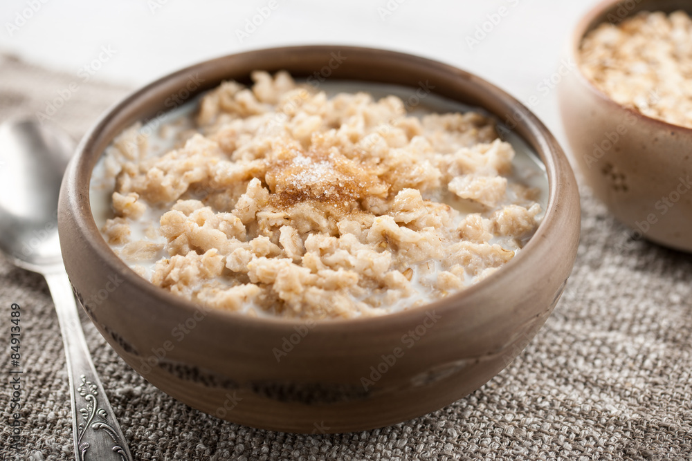

This is a basic but delicious recipe for oatmeal for all ages
This image was taken by me at home

Here is the list of ingredients required:
100g oatmeal
300ml oat milk
3 tablespoons peanut butter
4 tablespoons honey
1 teaspoon cinnamon
Instructions:
1.Pour milk into a pot and boil.2.Once the milk boils, reduce the heat and gently add oatmeal while stirring it using a wooden spoon at best.3.Once oatmeal has increased in size, add your peanut butter and continue to stir4.Add the rest of your ingredients and continue to stir until you have your good blend of ingredients5.Serve at best with blueberries to give your meal a good alkalinized balance. 6.Guten!!
Feeling unsatisfied with my recipe? Well follow this link for something less healthier